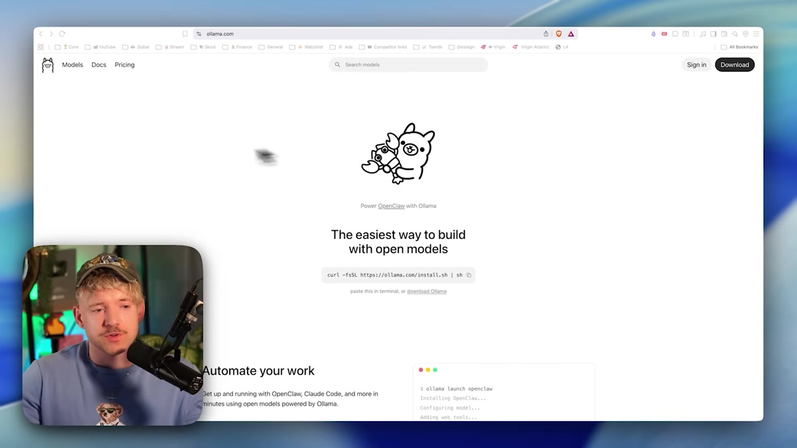
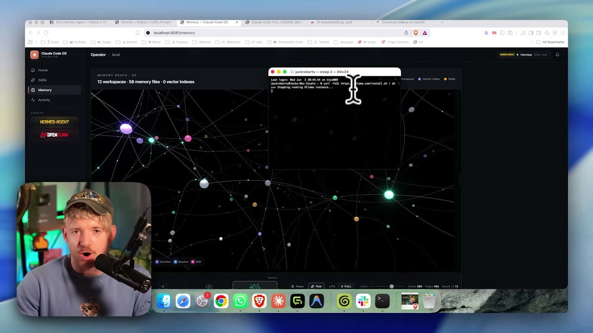

⬇️ Install Ollama
Enough theory — now let’s install. Ollama is the program that downloads, manages, and runs AI models on your machine. In this module, you’ll get it from the official website, install it with a single command (Mac/Linux) or using the installer (Windows), and check that everything is up and running. The commands are real and ready to paste.
🌐 Get Ollama from the official website
It all starts at ollama.com. There you'll find the button Download — which detects your system (Mac, Windows, or Linux)—and, just below it, the terminal installation command. Always get Ollama from this official source: that way, you avoid fake versions and get the right installer for your machine.

🧭 What you’ll find on the page
- •Button Download which already suggests your operating system version.
- •The terminal installation command (Mac/Linux), ready to copy.
- •A catalog of models to download later (Qwen, Gemma, Mistral, etc.).
New here? "Install" means copying the program to your computer. "Terminal" is the window where you type text commands (on a Mac it’s called Terminal; on Windows it may be PowerShell). You don’t need to be a programmer—you’ll just paste in ready-made commands.
Key concepts
Always use ollama.com — it helps you avoid fake installers.
The button detects your operating system.
Graphical installer or terminal command.
List of open models to download later.
💻 Install via terminal (Mac / Linux)
On Mac and Linux, the fastest way is to a single command. It downloads the official installation script and runs it all at once. It's exactly what's on the site — copy, paste into the terminal, and press Enter.
curl -fsSL https://ollama.com/install.sh | shollama --version
💡 What the command does, in plain English
curl downloads a file from the internet; -fsSL are options that make it quiet and safe; the | sh sends that file directly to the shell to run. In short: “download the official installer and run it.”
Key concepts
Downloads the installation script from the internet.
Sends the script to the shell to run right away.
No clicking through screens—you paste, run, and install.
Confirm that the installation worked.
🪟 Windows and Mac: the graphical installer
Don’t like the terminal? No problem. In the Windows (and on Mac too), you can download the installer using the Download button and install it clicking, like any other program. When you're done, Ollama keeps running in the background — a discreet icon in the system tray/menu bar.
🪟 Windows
- 1.Click Download on the website and download the installer.
- 2.Run the file and follow the assistant.
- 3.Ollama starts running as a background service.
🍎 Mac (app)
- 1.Download the Ollama app using the Download button.
- 2.Drag it to the Applications folder and open it.
- 3.The icon appears in the menu bar at the top.
Tip: even when you install through the app, you also get the terminal commands (ollama ...) included. They're part of the same package — so you can use the app day to day and the terminal when you need something more advanced.
Key concepts
Install with a click, no command line.
Ollama runs quietly, always ready.
Quick access from the system menu/tray.
Installing the app also gives you the commands.
✅ Check the installation
Before moving on to the next module, confirm that Ollama is running. Two commands do the trick: one shows the version (proves it's installed) and the other list the downloaded models (which will still be empty—and that’s expected).
ollama --version
ollama listollama version is 0.x.x. The second shows an empty table (or just the header) — that’s normal, because you haven’t downloaded any models yet. If both run without "command not found", everything is fine.Run ollama --version
If it printed a version number, the program is installed.
Run ollama list
An empty list means everything is fine. You’ll download your first model in module 2.3.
No errors? Keep going
If you see "command not found," skip to topic 6 (Something went wrong?).
Key concepts
Proof that Ollama is installed.
Expected at the beginning — no model yet.
Confirming now prevents headaches later.
A sign of a PATH issue — see topic 6.
🧰 The app vs. the terminal: two paths, one engine
Ollama has two faces: an application window (with buttons and chat) and terminal commands (ollama ...). Both talk to the same program running underneath — so there's no "right way": use whichever feels most comfortable to you.
The two interfaces — app e terminal — converge on the same Ollama engine, which loads the local model. Switching interfaces doesn't change the result: it's just how you type.
When to use each one? O app and it’s great for chatting and testing models with a mouse. The terminal great for automating, downloading models, and — later on — creating the agent’s 64k model (module 2.4).
Key concepts
Graphical window versus command line.
Both communicate with the same local service.
Comfortable for testing with the mouse.
Automation and advanced commands.
🆘 Something went wrong? The most common fixes
The most common surprise is installing Ollama and seeing the terminal say command not found. Almost always, it’s not the installation that failed — it’s the terminal that still can’t "see" the new command. Here are the fixes that resolve most cases.
✓ Try this first
- ✓Reopen the terminal — close the window and open another one; it loads the new PATH.
- ✓On Windows, open a new PowerShell after installing.
- ✓Confirm with
ollama --versionin the new window. - ✓If you installed it through the app, check whether it’s open/running.
✗ Typical errors
- ✗
command not found— the old terminal doesn’t have the updated PATH. - ✗Forgetting to reopen the terminal after installing.
- ✗Downloading from an unofficial site and getting the wrong version.
- ✗Think it “froze” the first time you use it (it’s just the model loading).
New here? "PATH" is the list of folders where the terminal looks for the commands you type. When Ollama is installed, it adds itself to this list—but the window that was already open doesn’t "know" about it. Reopening the terminal fixes it.
Key concepts
Where the terminal looks for commands.
Loads the new PATH — fixes most issues.
A new window can already see ollama.
In the app, it needs to be open/active.
Optional self-check: What’s the command to install Ollama on Mac/Linux from the terminal?
🎯 Module summary
curl -fsSL https://ollama.com/install.sh | sh.ollama --version e ollama list (an empty list is normal).Next module:
2.2 — Choose the right model for your hardware